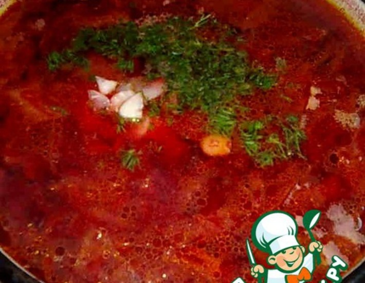
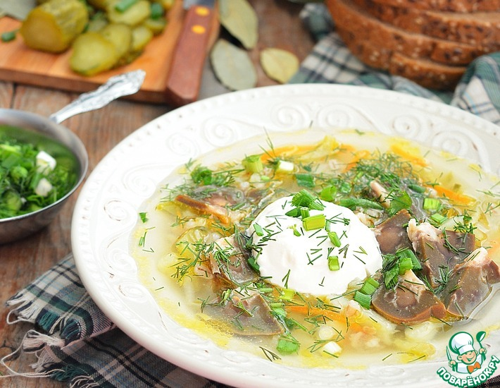
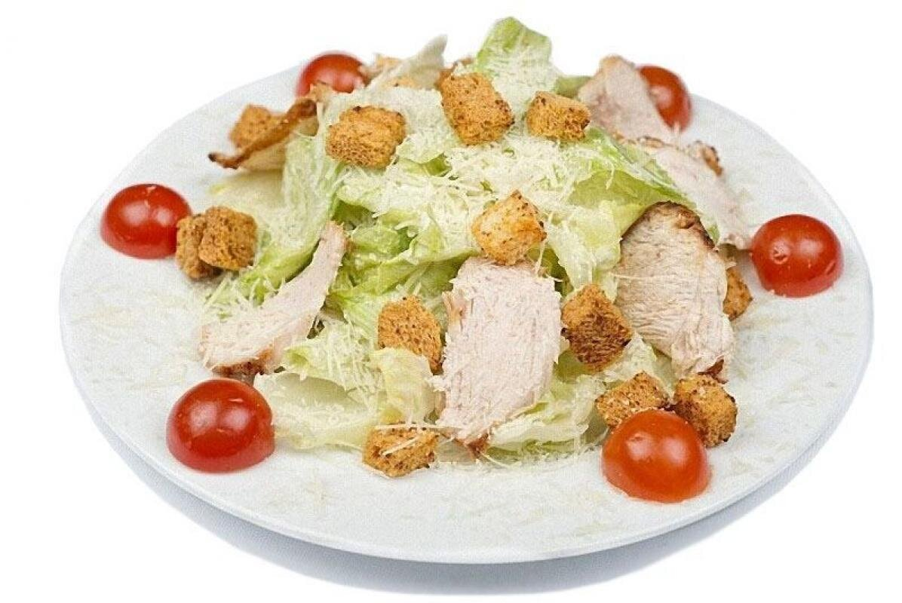
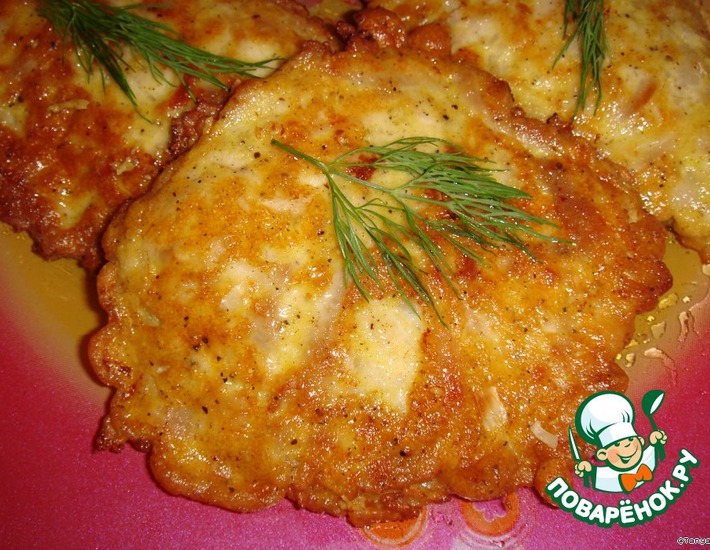
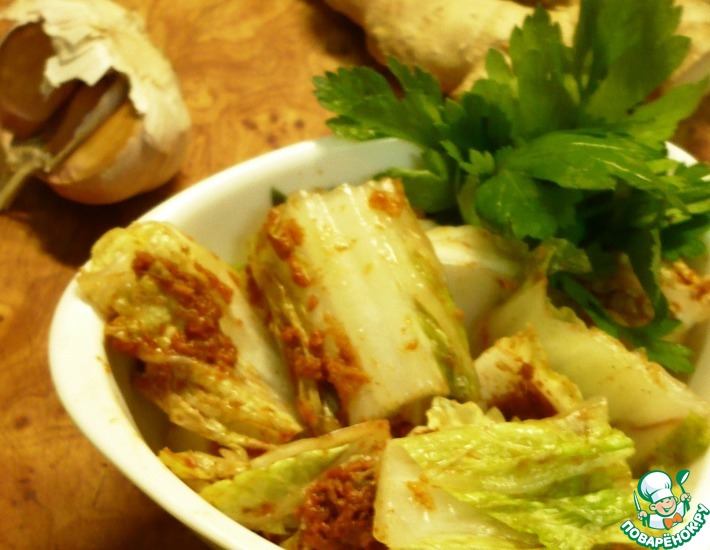

Мои любимые блюда
*из тех, которые я чаще всего готовлю*
рейтинг составлен на основе опроса членов моей семьи
Название блюда
Ссылка на рецепт
Как выглядит
Мой рейтинг
борщ
Рецепт борща

8/10
рассольник
Рецепт рассольника

7/10
салат "Цезарь"
Рецепт салата "Цезарь"

9/10
мясные оладьи
Рецепт мясных оладий

8/10
кимчи
<
Рецепт кимчи

7/10